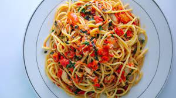

Spaghetti

Description
Spaghetti is a long, thin, solid, cylindrical pasta. It is a staple food of traditional Italian cuisine.
Like other pasta, spaghetti is made of milled wheat and water and sometimes enriched with vitamins and minerals. Italian spaghetti is typically made from durum wheat semolina.
Ingredients
Ingredients needed for preparing spaghetti.
- water and semolina flour
- egg.
- spinach.
- beet.
- tomato.
- carrot.
- spices for colour and flavour.
Steps
Steps in preparing spaghetti.
- Use a large pot.
- Load up the pot with lots of water.
- Salt the water.
- Bring the water to a full, rolling boil.
- Pour in the pasta.
- Stir to keep the pasta from sticking.
- Add all necessary ingredients.
- Test the pasta two minutes before it's “ready”.
- Save a scoop of pasta water.
- Drain, toss with sauce, and serve hot.